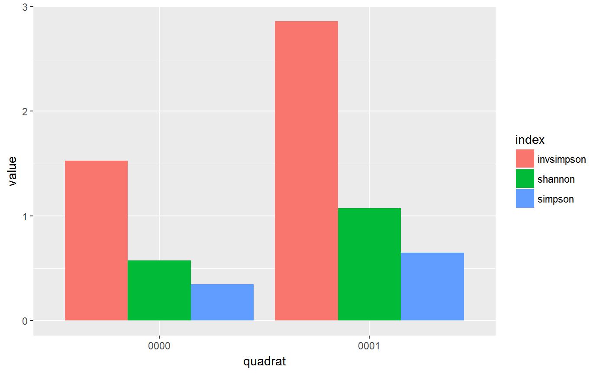

R/vgn_diversity.R
Adds a column diversity, of Shannon and Simpson diversity indices
calculated with vegan::diversity(). The output is a dataframe, convenient
for workflows with general purpose tools such as dplyr and ggplot2.
vgn_diversity(x, abundance, index = c("specnumber", "shannon"))
| x | A dataframe. |
|---|---|
| abundance | A numeric column in |
| index | Some of c("specnumber", "shannon", "invsimpson", "simpson") |
A summary of the input dataframe, with the additional column
diversity.
David Kenfack inspired the need for this function.
A talk by Jenny Bryan (rstd.io/row-work) inspired the fundamental implementation details.
library(dplyr) library(ggplot2) census <- data.frame( quadrat = rep(c("0000", "0001"), each = 3), sp = paste0("sp", c(1:3, 1, 4, 5)), n = sample.int(100, 6), stringsAsFactors = FALSE ) census <- census[1:5, ] census#> quadrat sp n #> 1 0000 sp1 9 #> 2 0000 sp2 83 #> 3 0000 sp3 59 #> 4 0001 sp1 16 #> 5 0001 sp4 1ungrouped <- census vgn_diversity(ungrouped, n)#> index value #> 1 specnumber 5.000000 #> 2 shannon 1.127089#> # A tibble: 4 x 3 #> quadrat index value #> <chr> <chr> <dbl> #> 1 0000 specnumber 3.00 #> 2 0000 shannon 0.864 #> 3 0001 specnumber 2.00 #> 4 0001 shannon 0.224# Similar alternative summarise( by_quadrat, specnumber = vegan::specnumber(n), shannon = vegan::diversity(n) )#> # A tibble: 2 x 3 #> quadrat specnumber shannon #> <chr> <int> <dbl> #> 1 0000 3 0.864 #> 2 0001 2 0.224# The output of `vgn_diversity` flows well into common pipelines: diversity <- census %>% group_by(quadrat) %>% vgn_diversity(n) diversity#> # A tibble: 4 x 3 #> quadrat index value #> <chr> <chr> <dbl> #> 1 0000 specnumber 3.00 #> 2 0000 shannon 0.864 #> 3 0001 specnumber 2.00 #> 4 0001 shannon 0.224# A plot diversity %>% ggplot(aes(quadrat, value)) + geom_col(aes(fill = index), position = "dodge")#> # A tibble: 2 x 2 #> index mean #> <chr> <dbl> #> 1 shannon 0.544 #> 2 specnumber 2.50